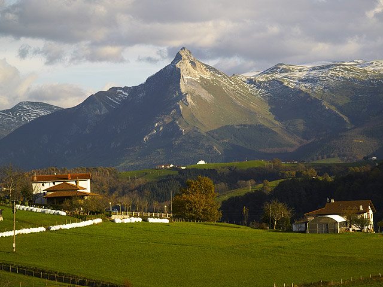

A continuación os mostramos dos de los más referentes montes de Euskal Herria, en este caso situados en Gipuzkoa.
Monte Txindoki

Situado en la Sierra de Aralar, el Txindoki es el segundo monte más alto de Gipuzkoa. Su característica forma piramidal y sus más de 1300 metros, hacen de este pico uno de los más famosos y preferidos para los mendizales que habituan a visitarlo.
- Ruta normal de Larraitz
- Ruta directa por la fuente de Oria
- Ruta de escalada por la Txema
- Ruta de escalada por la Arista del txindoki
Monte Ernio

El Ernio se considera un monte más sencillo con opciones interesantes. Desde poder subir en coche hasta el mismo refugio a poder recorrer toda la cordillera y hacer una ruta que desemboque en el mismo Villabona. Todo un lujo de monte para disfrutar hasta con los más pequeños. Comentar, además, que en el refugio dan muy bien de comer.